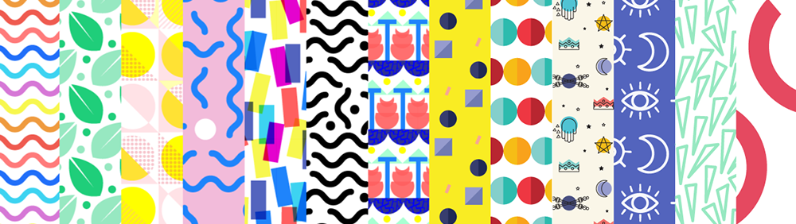
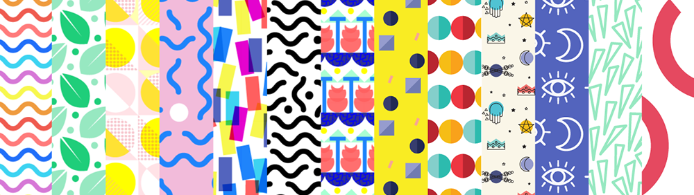

Fresh Patterns
By day I work on products that address real-world challenges. By night, Fresh Patterns is my visual outpouring whose sole purpose is to delight.
Fresh Patterns grew out of FreshWash- my long-standing passion project where I allowed myself to generate without parameters. It started as a way to have use scraps of projects that I was doing. Little experiments that went nowhere and meant nothing. But they looked cool! I called these the ‘Visual Experimental Iterations Series.’
Over time I started making patterns from some of these
visual experiments and the patterns were what I really enjoyed doing. The
blog has gained a following. I have over 2,300 followers
and the most popular image has over 8,000 shares.
The patterns are what I’m really proud of. When I see great patterns in the world,
especially on textiles – I'm transfixed. I think that everyone
deserves good design, and so many of the objects we interact with have sub-par
or boring patterns on them.

To make the patterns I either start from a sketch that
I digitize or begin straight in Illustrator. I typically go through several
iterations of each idea before I hit on something I really like.
Recently I have started exploring applying these patterns to textiles. I’m
really excited to see how they transition from the digital world to the physical.
 

I like to give myself a place to do something I love doing without a deadline
but with an outlet. I like to make them quickly most of the time, to generate
graphics, try things, move on, try other things. Sometimes I let myself obsess
over the details and make something really intricate. That feels good too.
Having this side project sharpens my visual design skills, serves as a way
for me to process all the visuals I'm absorbing as I go through my day, keeps
me looking for patterns out in the world that I want to riff on, and has made
me extremely good at the pattern-making tool in Illustrator.